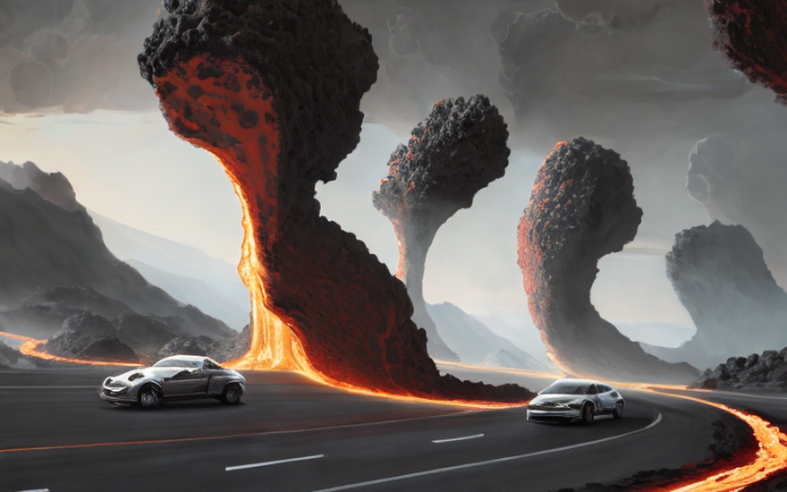
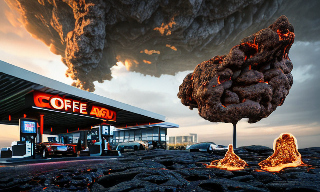
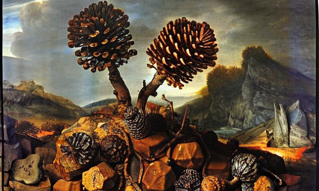

The planet Raxxar and the plantpunks
HOME
Table of Contents
Driving the streets of Jakar

The Raxxar planet, a world beyond our own, a place where the strong thrive and the weak perish. On this planet, there is no mercy, no room for error, for the land is covered in razor-sharp rocks, rocks that can slice through flesh as easily as a knife through butter. And as if that weren’t enough, rivers of scalding molten lava flow through the valleys, a constant reminder of the danger that lurks at every turn.
But despite the harsh conditions, there is life on Raxxar, life that has adapted to the unforgiving environment, life that has learned to thrive in a world that would see them destroyed.
In the heart of the planet lies a city, a city unlike any other, a city where the people have banded together to survive against all odds. This city is a bastion of hope, a beacon of light in a world of darkness. It is a place where the strong protect the weak, where the brave lead the way, and where the people never give up, no matter how dire the circumstances.
And now, we embark on a journey through the bustling streets of the city Jakar, where even the act of driving a car is an epic adventure in itself.
As we hit the streets, we see the landscape of Raxxar in all its glory. The roads are made of rough asphalt, a patchwork of rough and jagged edges, a testament to the harsh conditions of this world. But the drivers of Jakar are undaunted, they are the best of the best, they have mastered the art of navigating these treacherous roads, dodging the razor-sharp rocks that litter the streets and avoiding the rivers of molten lava that flow through the city.
We get behind the wheel of our trusty car, feeling the power of the engine beneath us, and we hit the accelerator. The car roars to life, and we’re off, racing through the streets, dodging and weaving between the other vehicles, our reflexes as sharp as the rocks that surround us.
As we drive, we feel the heat of the lava rivers on our skin, we smell the toxic fumes of the noxious gases in the air, but we never waver, we never give up. For we are the drivers of Jakar, the ones who have learned to thrive in this harsh and unforgiving world.
As we race through the streets, our hearts beating fast, we see the true beauty of the Raxxar planet, the beauty of life in a world that would see us destroyed. We see the bravery of the people, the strength of the city, and the spirit of adventure that drives us all forward.
The toxic environment

And now, after our wild and dangerous ride through the streets of Jakar, we find ourselves parking our trusty car, ready for a well-deserved rest.
But this is not just any ordinary rest, for we have come to a place that is as dangerous as the roads we just navigated, a place where the air is filled with toxic gases, a place where the wrong breath could mean certain death.
We are talking about the coffee shop, a place where the brave go to drink their morning joe, a place where the atmosphere is as toxic as the noxious gases that fill the streets outside.
As we step inside, we see the dangers of the coffee shop laid bare before us. The air is thick with the fumes of the toxic gases, and the barista is wearing a mask to protect himself from the noxious particles. But we are undaunted, we are the heroes of the Raxxar planet, and we are here for a cup of coffee.
We approach the counter, our nerves on edge, ready for anything, and we order our drinks. The barista hands us our cups, and we take a sip, feeling the heat of the coffee in our mouths, and the toxic atmosphere in our lungs.
But we are strong, we are the ones who have learned to thrive in a world that would see us destroyed, and we take another sip, enjoying the taste of the coffee, despite the danger that surrounds us.
An organism that cleanses the atmosphere

And now, as we sit in the coffee shop, sipping our coffee, we chance upon a headline in the newspaper, a headline that will change the fate of the Raxxar planet forever.
“New Discovery: A Miracle Organism that Cleans the Atmosphere!”
With a start, we read on, our hearts racing, as we learn about a new organism that has the potential to clean up the atmosphere of Raxxar, to make it a place where the toxic gases will no longer be a threat.
We read about how this new organism, known as “plants,” has the power to absorb the noxious gases, and release fresh, clean air into the atmosphere. We read about the experiments that have been done, and the results that have been achieved.
And as we read, we realize that this is a moment of destiny, a moment that will change the fate of Raxxar forever.
We finish our coffee, and step out into the street, our heads filled with plans and dreams, plans to introduce plant life to the Raxxar planet, to make it a place where the toxic gases are no longer a threat, and the atmosphere is clean and clear.
Introducing the plants: a miracle

And so we set out to introduce the plants to the Raxxar planet, to bring this miracle organism to a world that so desperately needs it.
As we drive, we realize the true potential of these amazing plants, not only do they have the ability to clean the atmosphere, but they also have the potential to automate the work of environmental laws, making the work of keeping the planet clean much easier.
For these plants are not just any ordinary plants, they are plantpunks, fearless and determined, spreading their seeds everywhere, bringing life to even the harshest and most desolate places on the planet.
We see the impact that they are having, as the toxic gases begin to dissipate, replaced by the fresh, clean air that they produce. And we see the work that they are doing, automating the cleaning of the atmosphere, and making the planet a safer and healthier place for all.
And as the air becomes cleaner and the roads become smoother, the people of Raxxar are able to thrive, living their lives in safety and comfort. And we see the incredible impact that this is having, as the once-toxic planet is transformed into a place of wonder and beauty.
Finding the balance

And as the plantpunks continue their transformative work on the Raxxar planet, a new discovery is made. It is found that the emissions from the cars on Raxxar can be balanced by the presence of less deserts and less unplanted land.
For the deserts and unplanted areas on Raxxar are toxic, filled with noxious gases that choke the life out of any creature who dare to venture there. And it is these areas that contribute greatly to the toxic atmosphere of Raxxar, making life all the more difficult for its inhabitants.
But with the plantpunks spreading their seeds and growing, the unplanted areas are no more. And as the rain continues to fall, the deserts are replaced with lush, verdant landscapes, and the air is cleansed of its toxins.
As the rains fall from the sky, they wash away the toxic air, purifying the atmosphere, and smoothing out the rough rocks on the road. And with the roads now smooth and free from danger, the cars on the Raxxar planet can speed through the streets with ease, no longer needing to dodge the rocks and avoid the rough terrain.
And as the air becomes cleaner and the roads become smoother, the people of Raxxar are able to thrive, living their lives in safety and comfort. And we see the incredible impact that this is having, as the once-toxic planet is transformed into a place of wonder and beauty.